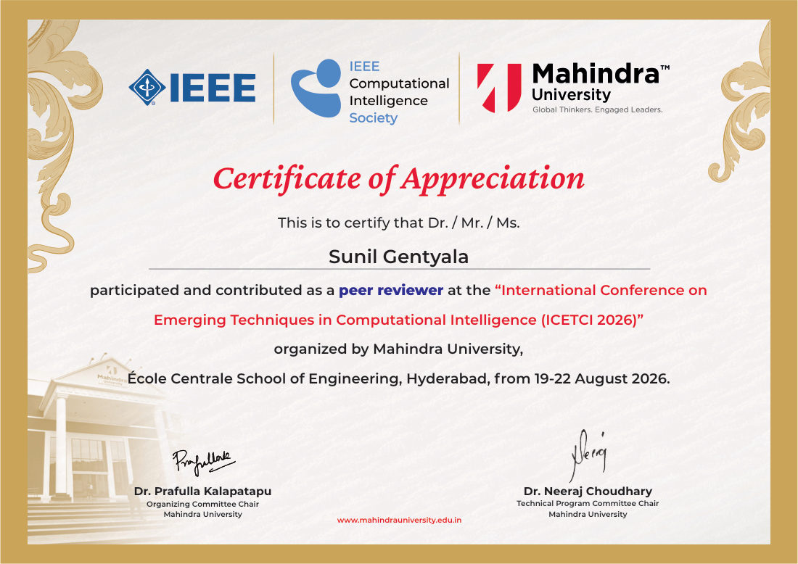
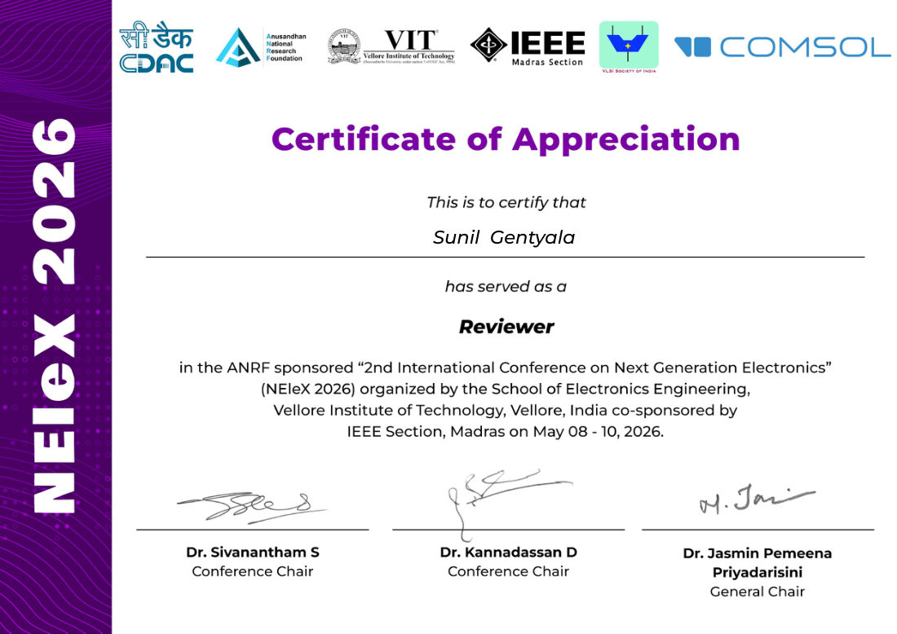
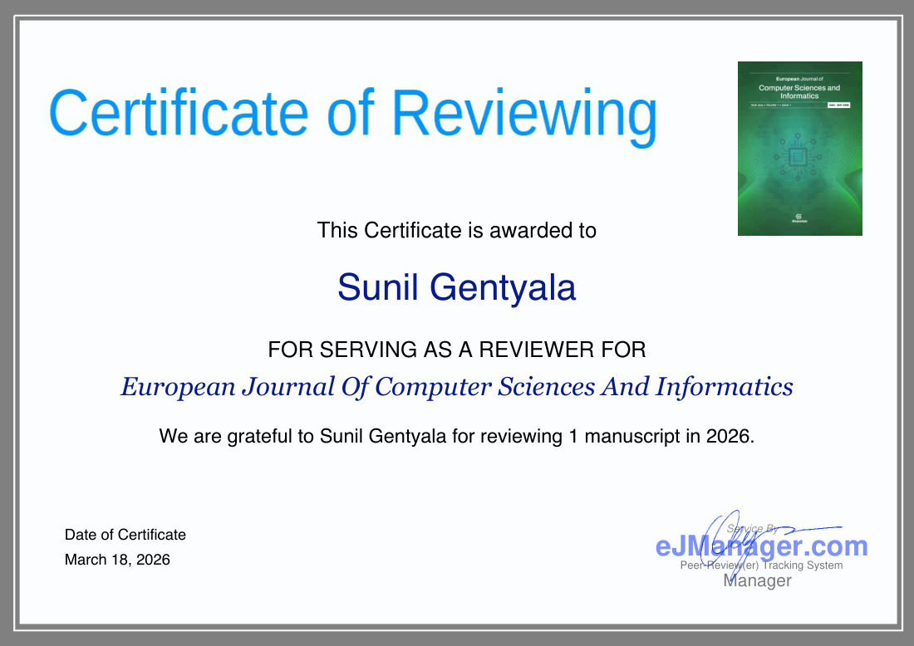

Peer review and judging
53 manuscripts reviewed across 14 journals and conferences, plus Cloud Security Alliance artifacts and competition judging.
Peer review
ARIIA 2026
IEEE COMSNETS 2027
IDEA 2026
NEleX 2026
IEEE ICTMOD 2026
BTS-I2C 2026
IEEE ICETCI 2026
Information Sciences
IEEE Access
European Journal of Computer Sciences and Informatics
IEEE Transactions on Information Forensics and Security
IEEE Transactions on Pattern Analysis and Machine Intelligence
The Cyber Defense Review
Health Information Management Journal
Cloud Security Alliance
Certificates

Peer reviewer, ICETCI 2026Mahindra University, IEEE Computational Intelligence Society, 19-22 August 2026
Reviewer, NEleX 2026Vellore Institute of Technology, co-sponsored by IEEE Madras Section, 8-10 May 2026
Reviewer, European Journal of Computer Sciences and InformaticsCertificate of Reviewing, 18 March 2026
Judging
Freed Family Pitch Competition, Fall 2026